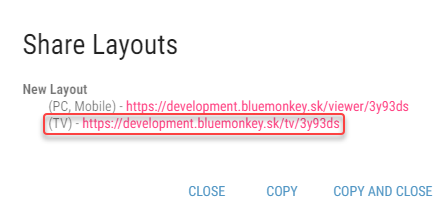
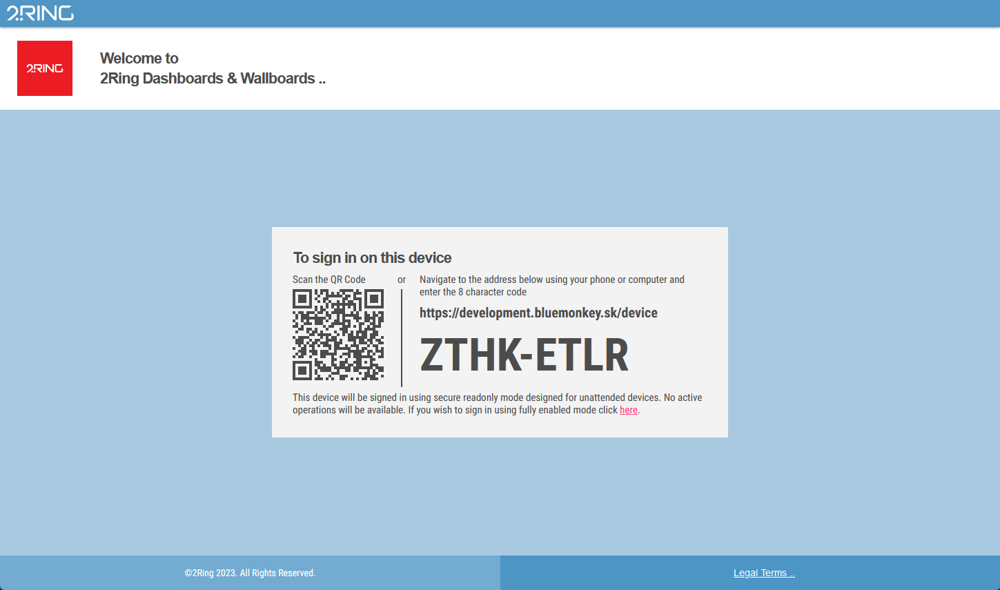
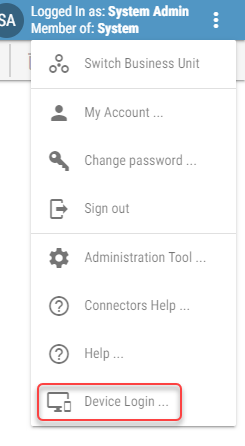
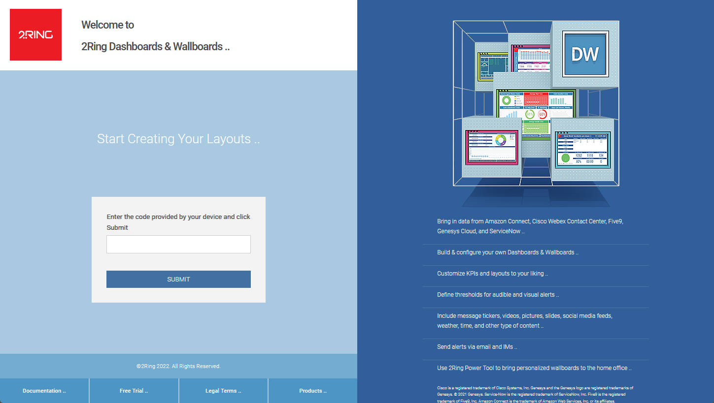
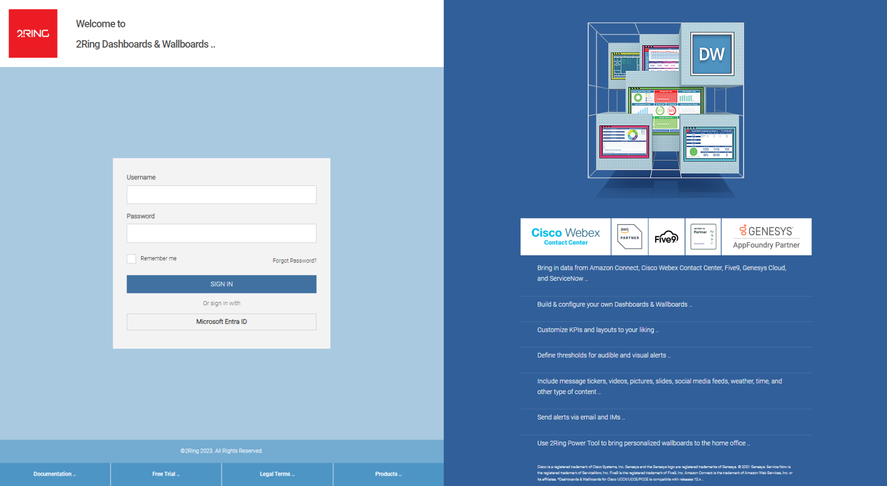
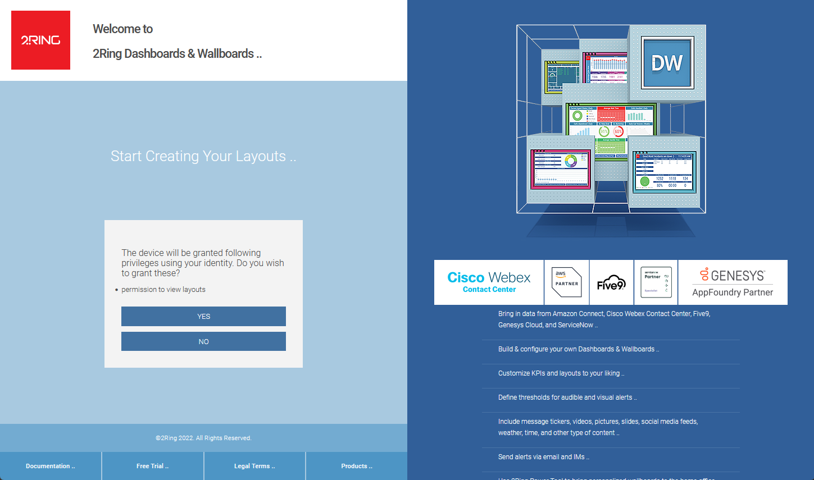
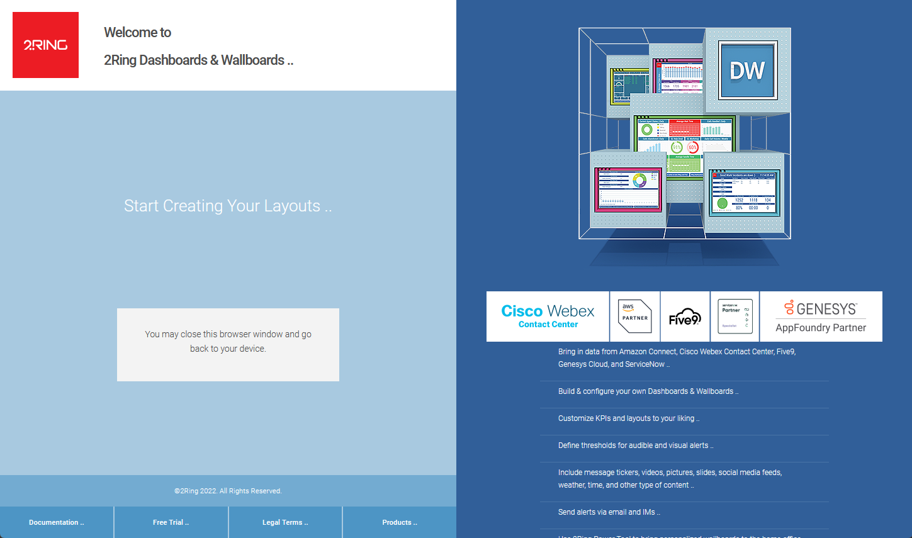

Logging In On TV¶
DW layouts can be also viewed on a Smart TV with internet access. As navigating the TV’s web browser can be slightly difficult, user can also log in using a smartphone or a web browser on PC. To access layouts via TV, follow these steps:
Although it is possible to log in in the standard way, the following steps are recommended to make the process more user-friendly.
On the TV, navigate to the website obtained from the Share Layouts dialog.
Figure 11: Share Layouts dialog
On the following screen, choose whether you want to login by scanning a QR code or navigating to a TV log in site using your PC’s browser or phone.
Figure 12: Logging in on TV
If you are already logged in the DW application on a PC browser, TV log in site can also be accessed by clicking the Device Login button in the DW application’s menu.
Figure 13: Logging in on TV
In the next screen enter the code visible on your TV. If QR code was scanned, this step is skipped as it is done automatically.
Figure 13: Logging in on TV
Log into the DW. This step is skipped if you are already logged in the DW. If you wish to use different identity you have to either logout from DW or use another browser.
Figure 14: Logging in on TV
Confirm that you wish to grant listed permission to the device.
With this login method, logged in user is only granted permission to view layouts.
Figure 15: Logging in on TV
You may close this browser window and go back to your device.
Figure 16: Logging in on TV
